Charleston Crisis
- This page refers to a legacy instance. For information on its renewal counterpart, see King's Heels.
| This quest or instance is repeatable. | ||
|---|---|---|
| Cooldown | Tickets Available | |
|
Resets at midnight |
Solo: 1 | Party: 2 |
Overview
| Requirements | |
|---|---|
| Base Level: | 130 |
| Starting Point: | |
| Rewards | |
| Experience: | - |
| Items: |  3-4 Charleston Component 3-4 Charleston Component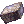 0-3 Huge Metal Scrap  1-4 Old Fuel Tank 1-4 Old Fuel Tank
|
In the until-recently abandoned Verus City, a robot has been waiting for an adventurer to help her get some missing parts...
Walkthrough
| Charleston Crisis Map |
|---|
| 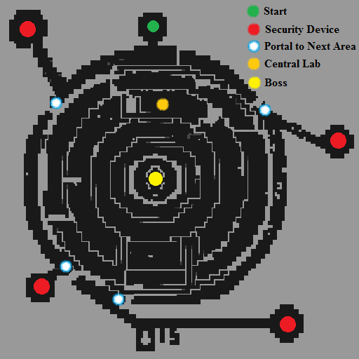 |
- Go in Verus and find Charleston . She needs replacement parts from the factory.
- After gaining her permission, you will be able to use the Machine next to her.
The party leader has to create the instance and the other members can join afterwards.
Destroying the Zone Security Devices
- Walk towards Charleston 1 and she'll ask you to destroy the Zone Security Devices to move forward within the factory.
- Go left and kill the first Zone Security Device (it's a mob). A portal will appear allowing to move forward.
- Repeat the same process 3 more times until Charleston 1 asks you to meet her at the lab.
- The lab is found in the middle of the map.
Moving there might be tricky, it's not easy to navigate.
Lab Requests
- Inside the lab, go near Dr. Vee to trigger the next scene (you must be really close to him). Accept to help him.
- The party leader has to speak with Charleston 1 and she'll ask you to kill 3 Locksteps.
You can see their locations on the minimap. - Return to Charleston 1 after killing 3 Locksteps. She tells you there's a problem with the generators, you have to investigate them.
You only have to go near the generators, you don't have to kill the Kickstep.
/navi [email protected] 175/195
/navi [email protected] 127/81
/navi [email protected] 87/230
- Return to the lab once you've investigated all 3 generators.
- Talk with Charleston 1 again and then follow her to the right.
Note: For the next part, the portals will get closed so it is recommended to bring everyone in the lab before proceeding. - Speak with Charleston 2 and a new scene will begin. The portals will close.
- You will get waves of mobs, they are fairly easy to kill. You must kill all of them to proceed and the portals will re-open.
The Core
- Walk out of the lab and go all the way south below the middle /navi [email protected] 130/127. Charleston 1 and 2 will be waiting for you.
- Move near Charleston 2 to trigger the next dialogues.
- Charleston 1 wants you to gather 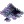 1 Explosive Powder. These drop from the Step found in the instance.
- Return to her and she will warp you inside the Core.
- Walk near the NPCs to trigger the next scene. You have to defeat Charleston 3.
Charleston Parts
- Once the scene between 1 and 2 is over, move downward and go back to Dr. Vee in the lab. A dialogue will trigger once you get close.
- Talk to Shalosh and select I want to go back.
You will be rewarded with 3-4 Charleston Component and either 0-3 Huge Metal Scrap or 1-4 Old Fuel Tank.
Enemies
| Image | Name | Level | HP | Size / Race / Element |
|---|---|---|---|---|
| Step | 130 | 55,403 | Small / Demon / Neutral 1 | |
| 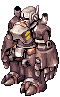 | Lockstep | 131 | 71,056 | Medium / Demon / Neutral 2 |
| 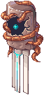 | Kickstep | 132 | 73,644 | Medium / Demon / Neutral 1 |

|
Kick And Kick | 133 | 68,018 | Medium / Demon / Neutral 2 |
| 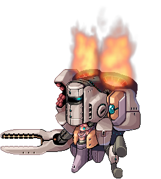 | Charleston 3
|
145 | 23,671,401 | Large / Demon / Neutral 3 |
Cards
| Card | Type | Description |
|---|---|---|
| Weapon Card | Axe Boomerang damage +30%.
If refined to +10 or higher, additional Axe Boomerang damage +30%. | |
| Weapon Card | Arms Cannon damage +20%.
If refined to +10 or higher, additional Arms Cannon damage +20%. If equipped with Kickstep Card, Mado does not consume Fuel. | |
| Armor Card | MaxHP +8%.
If equipped by Mechanic class, reduce long ranged physical damage received by 30%. | |
| Weapon Card | Vulcan Arm damage +10%.
If refined to +10 or higher, additional Vulcan Arm damage +20%. If equipped with Kickstep Card, Mado does not consume Fuel. | |
| Weapon Card | MaxSP -300.
High chance of breaking the enemy's armor when using melee attacks. If equipped with Kickstep Card, Mado does not consume Fuel. |
Obtainable Equipments
Please note that most of these pieces are available through the Verus Equipment Exchange!
| Supplement Equipment | |||
|---|---|---|---|
| Image | Name | Slot | Description |

|
STR Supplement Equipment | Armor | DEF + 80, ATK + 5%.
ATK + 1% every 4 upgrade levels of the item. Set Bonus: AGI Supplement Equipment & STR Supplement Equipment; ATK + 30. Set Bonus: VIT Supplement Equipment & STR Supplement Equipment; Axe Tornado damage +25%. Set Bonus: DEX Supplement Equipment & STR Supplement Equipment; Axe Boomerang damage + 100%. Mechanic only. |
| 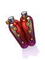 | VIT Supplement Equipment [1] | Garment | DEF + 20, Max HP + 6%.
Max HP + 1% every 2 upgrade levels of the item. If upgrade level is +9 or higher, HP Recovery + 50% Set Bonus: VIT Supplement Equipment & STR Supplement Equipment; Axe Tornado damage +25%. Mechanic only. |

|
AGI Supplement Equipment [1] | Footgear | DEF + 25, ASPD + 6%.
Max HP + 1% every 2 upgrade levels of the item. If upgrade level is +4 or higher, ASPD + 1%. Set Bonus: AGI Supplement Equipment & STR Supplement Equipment; ATK +30. Mechanic only. |

|
DEX Supplement Equipment [1] | Accessory | Cast Delay - 10%.
Variable Casting Time - 10%. Reduces the SP cost of skills by 10%. Set Bonus: DEX Supplement Equipment & STR Supplement Equipment: Axe Boomerang damage +100%. Reduces the cooldown of Axe Boomerang by 2 seconds. Mechanic only. |
| Reinforced Parts | |||
|---|---|---|---|
| Image | Name | Slot | Description |

|
Reinforced Parts - Plate | Armor | DEF + 110, Reduces damage received from Small and Medium size enemies by 10%.
Indestructible. If upgrade level is +7 or higher, reduces damage received from Large size enemies by 10%. If upgrade level is +9 or higher, reduces damage received from Small and Medium size enemies by 5%. Set Bonus: Reinforced Parts - Plate, Reinforced Parts - Engine, Reinforced Parts - Booster, Reinforced Parts - Gun Barrel; Arm Cannon damage + 50%. Mechanic only. |

|
Reinforced Parts - Engine [1] | Garment | DEF + 25, Cast Delay - 10%
If upgrade level is +7 or higher, reduces damage received from Neutral property attacks by 10%. If upgrade level is +9 or higher, Cast Delay - 10% Set Bonus: Reinforced Parts - Plate, Reinforced Parts - Engine, Reinforced Parts - Booster, Reinforced Parts - Gun Barrel; Arm Cannon damage + 50%. Mechanic only. |

|
Reinforced Parts - Booster [1] | Footgear | DEF + 23, Reduces the SP cost of Hover by 15.
If upgrade level is +7 or higher, reduces the SP cost of Acceleration by 20. Set Bonus: Reinforced Parts - Plate, Reinforced Parts - Engine, Reinforced Parts - Booster, Reinforced Parts - Gun Barrel; Arm Cannon damage + 50%. Mechanic only. |

|
Reinforced Parts - Gun Barrel [1] | Accessory | ATK + 4%
HIT + 10 Knuckle Boost damage +25%. Set Bonus: Reinforced Parts - Plate, Reinforced Parts - Engine, Reinforced Parts - Booster, Reinforced Parts - Gun Barrel; Arm Cannon damage + 50%. Mechanic only. |
| Excellion Gear | |||
|---|---|---|---|
| Image | Name | Slot | Description |
| 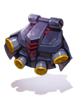 | Excellion Wing | Garment | A power wing made from the lost technology of a ruined laboratory.
Perfect Dodge + 8. If level 130 or above, additional Perfect Dodge + 2. Increase Flee by 2 for every refine upgrade. Can be enchanted with various unique reactors [+ Excellion Suit] Reduce skill delay by 10%. If level 130 or above, additional skill delay reduction by 10%. Perfect Dodge + 6. |

|
Excellion Suit | Armor | A power suit made from the lost technology of a ruined laboratory.
VIT + 6. If level 130 or above, additional VIT + 4. Increase Max HP by 4% for every 3 refine upgrades. This item is indestructible in battle. Can be enchanted with various unique reactors [+ Excellion Wing] Reduce skill delay by 10%. If level 130 or above, additional skill delay reduction by 10%. Perfect Dodge + 6. |
| Weapons | |||
|---|---|---|---|
| Image | Name | Slot | Description |

|
Pile Bunker P | Mace | ATK + 450
ATK + 5 every upgrade level of the item. Mechanic only. |

|
Pile Bunker S [1] | Mace | ATK + 400
Attack Speed +1% per 2 upgrade levels of the item. Mechanic only. |

|
Pile Bunker T [1] | Mace | ATK + 400
Reduces the SP cost of skills by 1% every upgrade level of the item. Mechanic only. |
| 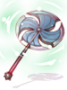 | Tornado Axe [1] | Two Handed Axe | ATK + 350
Reduces the cooldown of Axe Tornado by 1 second. |
| 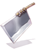 | Gigantic Blade [1] | Two Handed Sword | ATK + 300, ASPD - 15%.
Increases critical damage on targets by 1% per upgrade level of the item. Indestructible. If base STR is 110 or lower, ATK - 250 |

|
Robot's Mechanical Arm [2] | Mace | ATK + 195, CRIT + 20.
Indestructible. |
Enchants
It's possible to enchant the Mechanic Items by talking with Mass Charleston .
Enchanting requires 1 Charleston Component and 100,000 zeny.
Enchants can be reset by paying 1 Charleston Component and 100,000 zeny.
Enchantment can be done in 3 slots and items refined to +9 and above have wider options.
4th slot has 100% success chance, 3rd slot has chance of failure (resetting all enchant when failed), 2nd slot has chance of failure (either resetting all enchant or breaking the gear).
List of Enchants
| Items | Enchants Possible | +8 below Enchantment list option | +9 Enchantment list options | |
|---|---|---|---|---|
| Regular Upgrade | Superior Upgrade | |||
 Reinforced Parts - Booster [1] Reinforced Parts - Booster [1]
|
3 | STR / AGI / VIT / DEX 1~2, Spell 1, ASPD Lv.1 |
STR / AGI / VIT / DEX 2~3, Spell 1~2, ASPD Lv.1~2 | |
 AGI Supplement Equipment [1] AGI Supplement Equipment [1]
|
3 | STR / AGI / VIT / DEX 1~2, ASPD Lv.1 |
STR / AGI / VIT / DEX 2~3, ASPD Lv.1~2 | |
 Reinforced Parts - Engine [1] Reinforced Parts - Engine [1]
|
3 | STR / AGI / VIT / DEX / LUK 1~2, Expert Archer 1 |
STR / AGI / VIT / INT / DEX / LUK 2~3, Expert Archer 1~3 | |
| 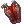 VIT Supplement Equipment [1] | 3 | STR / AGI / VIT / INT / DEX / LUK 1~2, Expert Archer 1 |
STR / AGI / VIT / INT / DEX / LUK 2~3, Expert Archer 1~3 | |
 Reinforced Parts - Plate Reinforced Parts - Plate
|
3 | AGI / LUK 1~2, ASPD Lv.1~2, Flee 3~12 |
Speed: AGI / LUK 2~3, ASPD Lv.1~2, Flee 3~12 |
Attack: STR / DEX 2~3, Fighting Spirit 1-2, Expert Archer 1~3 |
 STR Supplement Equipment STR Supplement Equipment
|
3 | AGI / LUK 1~3, ASPD Lv.1~2, Flee 3~12 |
Speed: AGI / LUK 2~3, ASPD Lv.1~2, Flee 3~12 |
Defense: VIT 2~3, MHP 1~3%, Neutral Resist 1~2, DEF 6~9 |
 Reinforced Parts - Gun Barrel [1] Reinforced Parts - Gun Barrel [1]
|
2 | STR / AGI / VIT / INT / DEX 1~2, Spell 1~2, ASPD Lv.1 |
n/a | |
 DEX Supplement Equipment [1] DEX Supplement Equipment [1]
|
2 | STR / AGI / VIT / INT / DEX 1~2, Spell 1~2, ASPD Lv.1 |
n/a | |